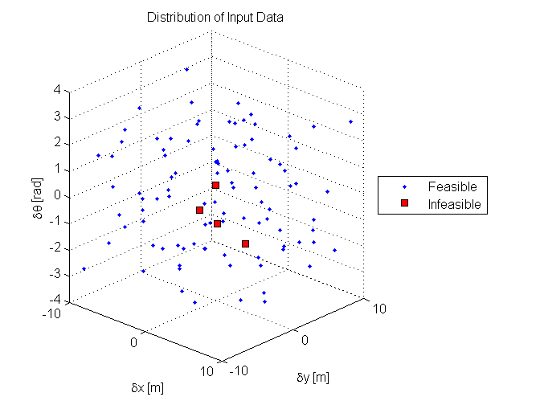

Contents
- CS 229 Machine Learning Project
- Enter Input
- Dubin's Car
- Process Training Data and Testing Data
- Compute Reachability Set Approximations for Various Cost Thresholds
- Label Training Data
- Run the SVM Algorithm
- Apply the Fit SVM Parameters to the Test Set from Test Set Data File
- Plot the Results
- Report the Results
- Adjust and Save Plots
CS 229 Machine Learning Project
Ross Allen Ashley A. Clark Joseph A. Starek November 14th, 2013
function dubins_reachability_classifier
clc; close all; clear all;
Enter Input
% Kernel function options: % 'linear' — Linear kernel, meaning dot product: K(x,z) = x'*z. % 'quadratic' — Quadratic kernel: K(x,z) = (x'*z + c)^2 % 'polynomial' — Polynomial kernel (default order 3): K(x,z) = (x'*z + c)^(polyorder) % 'rbf' — Gaussian Radial Basis Function kernel with a default scaling factor, sigma, of 1: K(x,z) = exp( -(1/(2*rbf_sigma^2))*||x - z|| % 'mlp' — Multilayer Perceptron kernel with default scale [1 –1]. Uses layers of sigmoid functions, e.g. phi(v_i) = tanh(v_i). % @kfun — Function handle to a kernel function. A kernel function must be of the form: function K = kfun(U, V) % The returned value, K, is a matrix of size M-by-N, where U and V have M and N rows respectively % % Method options: % 'QP' — Quadratic programming. The classifier is a 2-norm soft-margin SVM. Create QP 'options' with 'optimset'. % 'SMO' — Sequential Minimal Optimization. Create SMO 'options' with 'statset'. % 'LS' — Least squares. training_filename = 'Data/DubinsTrainingData-CS229Final-Dec11-1.txt'; % Name and extension of training data file testing_filename = 'Data/DubinsTestingData-CS229Final-Dec11-1.txt'; % Name and extension of testing data file autoscale = true; % If true, automatically centers data at their mean and scales to unit standard deviation before training. C = 1; % Value of the box constraint C for the soft margin. C can be a scalar, or a vector of the same length as the training data. kernel_cachelimit = 5000; % Value that specifies the size of the kernel matrix cache for the SMO training method. kernel_function = 'polynomial'; % Kernel function used to map the training data into kernel space. violation_level = 0; % A value in [0,1) for the fraction of samples allowed to violate the KKT conditions for the SMO training method. method = 'SMO'; % Method used to find the separating hyperplane. mlp_params = [1, -1]; % Parameters of the Multilayer Perceptron (mlp) kernel. display = 'final'; % String that specifies the info that is displayed as the algorithm runs: 'off', 'iter', or 'final'. max_iter = 50000; % Maximum number of iterations of the main loop. polyorder = 4; % Order of the polynomial kernel. rbf_sigma = 1; % Scaling factor (sigma) in the radial basis function kernel. showplot = true; % Indicates whether to plot the grouped data and separating line. kkt_tol = 1e-3; % Tolerance with which the KKT conditions are checked for the SMO training method. validation_mode = 'none'; % Type of validation method to use: 'holdout', 'kFold', 'leave_one_out', 'none' plot_mode = 'publication'; % Mode to use for displaying plots: 'display', 'publication' sigma_threshold = [-1, 0, 1]; % Signed number of standard deviations from mean cost for setting the reachability cost threshold holdout_percent = 30; % Percentage of training data to hold out for Holdout Cross-Validation K = 10; % Number of training data partitions for K-Fold Cross-Validation
Dubin's Car
dubins_reachable_set( linspace(pi/8,pi/2,6), 1, 1 );
Process Training Data and Testing Data
% Training labels TRUE = 1; FALSE = -1; % Test if training and test data files exist if fopen( training_filename ) == -1 error('Be sure to enter a valid filename for the training file.'); end test_file_exists = not( fopen( testing_filename ) == -1 ); % Read in and plot input training data [ delta_x, delta_y, delta_theta, cost, ~ ] = read_data( training_filename ); % Extract the matrix of feature vectors from the matrix of states training_data = extract_features( delta_x, delta_y, delta_theta ); m = size(training_data,1); n = size(training_data,2); % Read in and plot input testing data if test_file_exists [ delta_x_test, delta_y_test, delta_theta_test, cost_test, run_number_test ] = read_data( testing_filename ); m_test = length(cost_test); end % Extract the matrix of feature vectors from the matrix of states %testing_data = extract_features( delta_x_test, delta_y_test, delta_theta_test );
Compute Reachability Set Approximations for Various Cost Thresholds
for sigma = sigma_threshold
Label Training Data
% Determine reachability within cost threshold
cost_threshold = mean(cost) + sigma*std(cost);
training_reachability = FALSE.*ones(m,1);
training_reachability( cost <= cost_threshold ) = TRUE;
Run the SVM Algorithm
train_options = struct( ... 'autoscale', autoscale, ... 'C', C, ... 'kernel_cachelimit', kernel_cachelimit, ... 'kernel_function', kernel_function, ... 'violation_level', violation_level, ... 'method', method, ... 'mlp_params', mlp_params, ... 'display', display, ... 'max_iter', max_iter, ... 'polyorder', polyorder, ... 'rbf_sigma', rbf_sigma, ... 'showplot', showplot, ... 'kkt_tol', kkt_tol ... ); test_options = struct( ... 'showplot', showplot ... ); % Run SVM on portions of the training data, using one of the cross-validation techniques if strcmpi(validation_mode, 'holdout'), [svm_output, n_errors, error_percent] = ... holdOut_cross_validation( holdout_percent, training_data, training_reachability, train_options, test_options ); error_string = 'Number of Errors (Held-out Data)'; error_percent_string = 'Percentage Error (Held-out Data)'; elseif strcmpi(validation_mode, 'kFold') [svm_output, n_errors, error_percent] = ... kFold_cross_validation( K, training_data, training_reachability, train_options, test_options ); error_string = ['Number of Errors (Avg over each (1/', num2str(k), ')-th of Data)']; error_percent_string = ['Percentage Error (Avg over each (1/', num2str(k), ')-th of Data)']; elseif strcmpi(validation_mode, 'leave_one_out') [svm_output, n_errors, error_percent] = ... leaveOneOut_cross_validation( training_data, training_reachability, train_options, test_options ); error_string = 'Number of Errors (Avg over each Data Pt)'; error_percent_string = 'Percentage Error (Avg over each Data Pt)'; elseif strcmpi(validation_mode, 'none') svm_output = { svm_train( training_data, training_reachability, train_options ) }; n_errors = NaN; error_percent = NaN; error_string = 'Number of Validation Errors (N/A)'; error_percent_string = 'Percentage Validation Error (N/A)'; end
Sequential Minimal Optimization method finished. Sequential Minimal Optimization status: Number of iterations: 1997 Value of stopping criterion: 0.000963 Value of objective function: 0.009659 ---------------------------
Sequential Minimal Optimization method finished. Sequential Minimal Optimization status: Number of iterations: 3204 Value of stopping criterion: 0.000847 Value of objective function: 0.009813 ---------------------------
Sequential Minimal Optimization method finished. Sequential Minimal Optimization status: Number of iterations: 1917 Value of stopping criterion: 0.000965 Value of objective function: 0.002533 ---------------------------
Apply the Fit SVM Parameters to the Test Set from Test Set Data File
% Apply classifier to test data if test_file_exists test_reachability = FALSE.*ones(m_test,1); prediction_times = zeros(m_test,1); for j = 1:m_test tic; test_data_point = extract_features( delta_x_test(j), delta_y_test(j), delta_theta_test(j) ); test_reachability(j) = is_reachable( svm_output, test_data_point ); prediction_times(j) = toc; end avg_prediction_time = mean(prediction_times); [n_test_errors, test_error_percent] = count_errors( test_reachability, (cost_test < cost_threshold) ); end
Plot the Results
% Plot the set of reachable states figure; if test_file_exists subplot(1,2,1); end hold on; scatter3( delta_x( training_reachability == TRUE ), delta_y( training_reachability == TRUE ), delta_theta( training_reachability == TRUE ), 'ob' ); scatter3( delta_x( training_reachability == FALSE ), delta_y( training_reachability == FALSE ), delta_theta( training_reachability == FALSE ), 'xr' ); view([43, 22]); box off; grid on; legend('Reachable', 'Unreachable', 'Location', 'SouthOutside'); xlabel('\deltax [m]'); ylabel('\deltay [m]'); zlabel('\delta\theta [rad]'); title(['Set of ', num2str(cost_threshold), '-Cost Reachable States']); if test_file_exists subplot(1,2,2); hold on; scatter3( delta_x_test( test_reachability == true ), delta_y_test( test_reachability == true ), delta_theta_test( test_reachability == true ), 'ob' ); scatter3( delta_x_test( test_reachability == false ), delta_y_test( test_reachability == false ), delta_theta_test( test_reachability == false ), 'xr' ); view([43, 22]); box off; grid on; legend('Reachable', 'Unreachable', 'Location', 'SouthOutside'); xlabel('\deltax [m]'); ylabel('\deltay [m]'); zlabel('\delta\theta [rad]'); title(['Estimate of the ', num2str(cost_threshold), '-Cost Reachable States']); figure; hold on; plot( run_number_test( test_reachability == true ), cost_test( test_reachability == true ), 'ob' ); plot( run_number_test( test_reachability == false ), cost_test( test_reachability == false ), 'xr' ); V = axis; plot( [V(1), V(2)], cost_threshold.*ones(2,1), '-k', 'Linewidth', 2 ); xlabel('Run'); ylabel('Cost'); title(['Training Data Costs with Reachability Cost Threshold ', num2str(cost_threshold), ' (\sigma = ', num2str(sigma), ')']); grid on; end
Report the Results
fprintf( 1, '\nCost Threshold: \t\t\t%f (sigma = %f)\n', cost_threshold, sigma ); fprintf( 1, 'Validation Method: \t\t\t%s\n', validation_mode ); fprintf( 1, '%s: \t%d\n', error_string, n_errors ); fprintf( 1, '%s: \t%f%%\n', error_percent_string, error_percent ); if test_file_exists fprintf( 1, 'Number of Test Set Errors: \t%d\n', n_test_errors ); fprintf( 1, 'Percentage Test Set Errors: %f%%\n', test_error_percent ); fprintf( 1, 'Average Prediction Time: \t%f\n', avg_prediction_time ); end fprintf( 1, '\n');
Cost Threshold: 11.882917 (sigma = -1.000000) Validation Method: none Number of Validation Errors (N/A): NaN Percentage Validation Error (N/A): NaN% Number of Test Set Errors: 4 Percentage Test Set Errors: 4.166667% Average Prediction Time: 0.001977
Cost Threshold: 17.346771 (sigma = 0.000000) Validation Method: none Number of Validation Errors (N/A): NaN Percentage Validation Error (N/A): NaN% Number of Test Set Errors: 7 Percentage Test Set Errors: 7.291667% Average Prediction Time: 0.001853
Cost Threshold: 22.810626 (sigma = 1.000000) Validation Method: none Number of Validation Errors (N/A): NaN Percentage Validation Error (N/A): NaN% Number of Test Set Errors: 3 Percentage Test Set Errors: 3.125000% Average Prediction Time: 0.001332
end
Adjust and Save Plots
if test_file_exists figure_names = {'Dubins_reachability_set_example', 'Dubins_training_data_feasibility', 'Dubins_test_data_feasibility', ... 'Dubins_reachability_-1sigma', 'Dubins_cost_reachability_-1sigma', ... 'Dubins_reachability_0sigma', 'Dubins_cost_reachability_0sigma', ... 'Dubins_reachability_1sigma', 'Dubins_cost_reachability_1sigma'}; else figure_names = {'Dubins_reachability_set_example', 'Dubins_training_data_feasibility', ... 'Dubins_reachability_-1sigma', ... 'Dubins_reachability_0sigma', ... 'Dubins_reachability_1sigma'}; end set_plot_properties( 'mode', plot_mode ); savefigs('Format', 'fig', 'Save', 'all', 'SaveDir', 'Results', 'ZipName', 'Dubins_figs', 'SaveAs', figure_names ); savefigs('Format', 'png', 'Save', 'all', 'SaveDir', 'Results', 'ZipName', 'Dubins_pngs', 'SaveAs', figure_names );
Figures saved... Figures zipped... Done... Figures saved... Figures zipped... Done...
end function [ delta_x, delta_y, delta_theta, cost, run_number ] = read_data( filename ) % Read in training data fid = fopen( filename ); data = textscan( fid, '%d%f%f%f%f%d', 'Headerlines', 0, 'Delimiter', ';' ); run_number = data{1}; delta_x = data{2}; delta_y = data{3}; delta_theta = data{4}.*(pi/180); cost = data{5}.*(4/pi); exit_flag = data{6}; %data{1} = double(data{1}); data{6} = double(data{6}); %data{5} = data{5}.*(4/pi); %dlmwrite('DubinsTrainingData-CS229Final-Dec11-1.txt',cell2mat(data),'delimiter',';','precision',5); % Visualize infeasible data figure; hold on; scatter3( delta_x( exit_flag == 1 ), delta_y( exit_flag == 1 ), delta_theta( exit_flag == 1 ), '.b' ); scatter3( delta_x( exit_flag ~= 1 ), delta_y( exit_flag ~= 1 ), delta_theta( exit_flag ~= 1 ), 'sk', 'MarkerFaceColor', 'r' ); view([43, 22]); box off; grid on; legend('Feasible', 'Infeasible', 'Location', 'EastOutside'); xlabel('\deltax [m]'); ylabel('\deltay [m]'); zlabel('\delta\theta [rad]'); title('Distribution of Input Data'); % Use only feasible training data: reject any 2PBVP solutions that did not converge delta_x = delta_x( exit_flag == 1 ); delta_y = delta_y( exit_flag == 1 ); delta_theta = delta_theta( exit_flag == 1 ); cost = cost( exit_flag == 1 ); run_number = 1:length(delta_x); end function feature_matrix = extract_features( delta_x, delta_y, delta_theta ) w_x = 1; w_y = 1; w_theta = 1; feature_matrix = [ ... delta_x, ... delta_y, ... delta_theta, ... abs(delta_x), ... abs(delta_y), ... abs(delta_theta), ... delta_x.^2, ... delta_y.^2, ... delta_theta.^2, ... delta_x.*delta_y ... delta_x.*delta_theta, ... delta_y.*delta_theta, ... sin(delta_theta), ... cos(delta_theta), ... tan(delta_theta), ... sin(delta_theta).^2, ... cos(delta_theta).^2, ... tan(delta_theta).^2, ... delta_x.*sin(delta_theta), ... delta_y.*sin(delta_theta), ... delta_x.*cos(delta_theta), ... delta_y.*cos(delta_theta), ... delta_x.*tan(delta_theta), ... delta_y.*tan(delta_theta), ... sqrt(delta_x.^2 + delta_y.^2), ... delta_theta.*sqrt(delta_x.^2 + delta_y.^2), ... sqrt((w_x.*delta_x).^2 + (w_y.*delta_y).^2 + (w_theta.*delta_theta).^2), ... ]; end function dubins_reachable_set(T, rho_min, v) Npoints = 100; omega = v/rho_min; T = sort( max( min(T, (pi/2)/omega), 0) ); figure; hold on; xlabel('x'); ylabel('y', 'Rotation', 0); if numel(T) == 1 title(['Reachable Set for the Dubin''s Car (\rho_{min} = ', num2str(rho_min), ', v = ', num2str(v), ') for Horizon Time T = ', num2str(T)]); else title(['Reachable Sets for the Dubin''s Car (\rho_{min} = ', num2str(rho_min), ', v = ', num2str(v), ') for Horizon Times T \leq ', num2str(T(end))]); end grid on; for Thorizon = T(1:1:end-1) tau = linspace( 0, Thorizon, Npoints ); x_right = rho_min.*(1 - cos(omega*tau)); y_right = rho_min.*sin(omega*tau); u_1 = y_right./rho_min; u_2 = (rho_min - x_right)./rho_min; x_topright = x_right + u_1.*( Thorizon - tau ); y_topright = y_right + u_2.*( Thorizon - tau ); plot( x_topright, y_topright, '--k', -x_topright, y_topright, '--k' ); text( x_topright(end), y_topright(end), ['T = ', num2str(Thorizon,'%3.1f')], 'VerticalAlignment', 'Top' ); end Thorizon = T(end); tau = linspace( 0, Thorizon, Npoints ); x_right = rho_min.*(1 - cos(omega*tau)); y_right = rho_min.*sin(omega*tau); u_1 = y_right./rho_min; u_2 = (rho_min - x_right)./rho_min; x_topright = x_right + u_1.*( Thorizon - tau ); y_topright = y_right + u_2.*( Thorizon - tau ); plot( x_right, y_right, '-b', -x_right, y_right, '-b' ); plot( x_topright, y_topright, '-b', -x_topright, y_topright, '-b' ); end